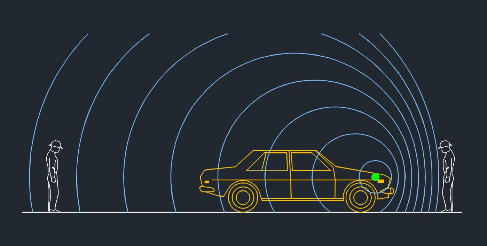
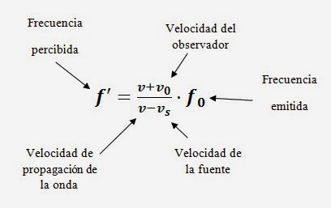

Christian Andreas Doppler fue un físico austriaco que se hizo famoso por estudiar el cambio de las propiedades del sonido cuando el objeto que lo emite está en movimiento
El efecto Doppler fue descubierto en 1842 por Christian Doppler y es un efecto de la física ondulatoria que ocurre cuando una fuente en movimiento emite ondas.
¿Qué es el efecto Doppler?
Es el cambio en la frecuencia de una onda que se produce cuando el emisor está en movimiento. Es decir, el receptor estando estático, percibe los cambios en las ondas según la distancia hasta el emisor, que esta en movimiento.
EJEMPLOS
- Sonido de un vehículo de emergencia
- Un tren en movimiento
- En los aviones
- En los deportes
APLICACIONES
Metorología
Medición de la velocidad del viento.MEDICINA
Detección de movimiento fetalOCEANOGRAFÍA
Medición de las corrientes marinasGeología
Detección de los movimiento de la tierraIngeniería
Medición de las vibracionesCONTROL DE TRÁFICO
Medición de la velocidad de los vehículosASTRONOMÍA
Búsqueda de exoplanetasTELECOMUNICACIONES
Comunicaciones móvilesECUACIÓN
